按你的口味定制——Taylor Swift、The Weeknd、RADWIMPS、周杰伦、米津玄師、藤井風、久石让…… 覆盖 2025 下半年至 2026 已发行与待发行作品。点封面直接跳 Apple Music 作品页。
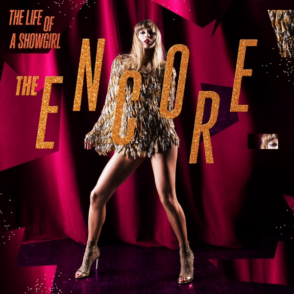
Taylor Swift
2026-09-24
第 12 张专辑的加曲版，新增 4 首新录歌曲，最低成本补课。
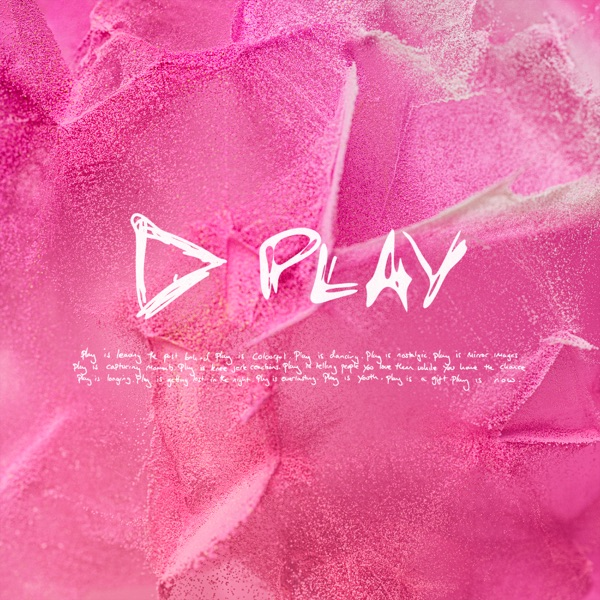
Ed Sheeran
2025-09-12
“播放控制符”五部曲第一部，纯 Pop 主调，直接听扩展版的加曲。
Hans Zimmer
2025-07-11
管弦+电子混合的体育片配乐，非《沙丘》式氛围，能当歌听。先听 Original Score 版。
Rockstar / Atlantic
2026-11-19
游戏专属原创原声，34 首全新曲。定档 2026-11-19，官宣日已上线 6 首先行曲。
The Weeknd feat. 高橋洋子
2026-09（现场）
采样《新世纪福音战士》主题曲，高橋洋子同台。仅 2026-09 东京现场首演，未正式发行。
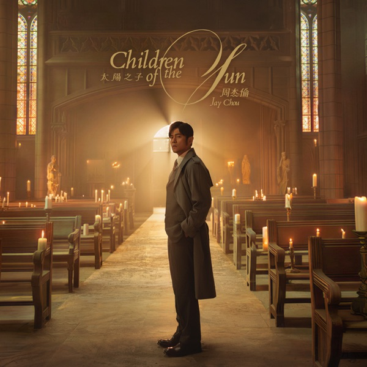
周杰倫
2026-03-25
出道 25 周年纪念专，暌违 3 年 8 个月。先听同名主打，再听《西西里》。
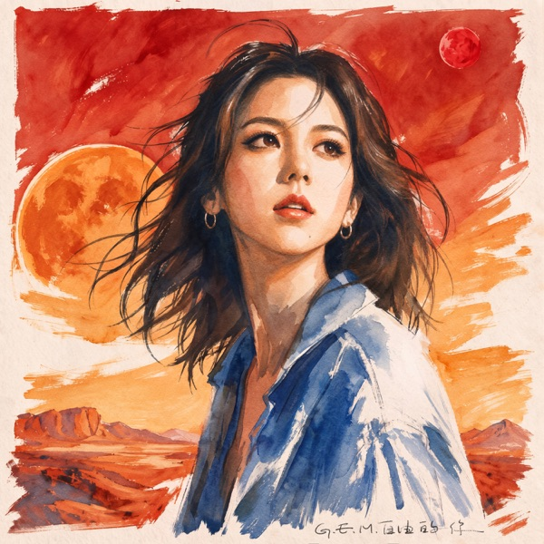
鄧紫棋
2026-10-05
时隔四年的新专辑先行曲，李荣浩身兼制作/编曲/混音。注意听副歌人声的“收”。
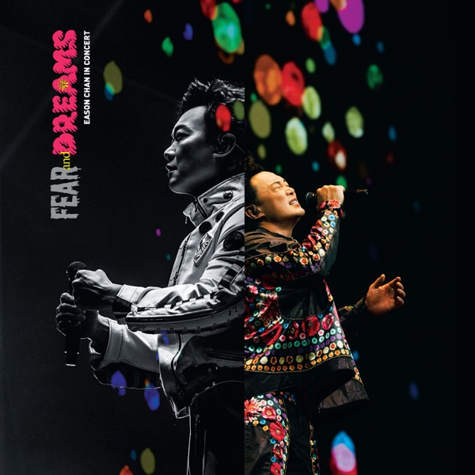
陳奕迅
2025-08-25
七年巡演收官，31 首重新编排现场版，按官方顺序听是情绪递进设计。
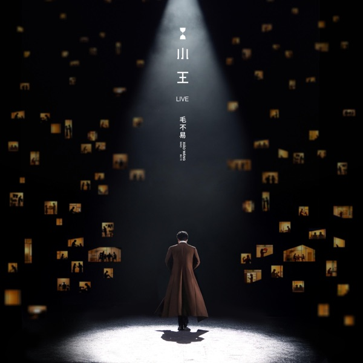
毛不易
2026-02-03
“时空倒转”概念重唱《二零三》《水乡》《东北民谣》，减法路线，现场编曲更干净。
阿鲲 / 朱芸编 / 杨芮
2025-03-09
60 首音乐段落，唢呐/笛/箫/埙 + 侗族大歌/呼麦与西乐混合。挑名场面曲，一次 3–4 首。（苹果库内暂未收录，点开为搜索页）
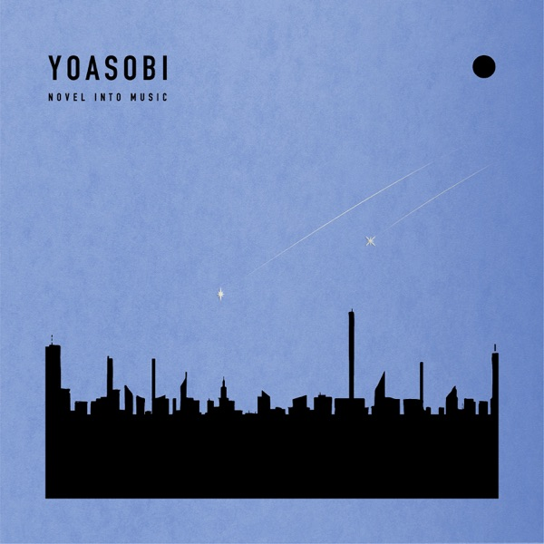
YOASOBI
2026-06-26
“THE BOOK”系列完结作，按曲序听，系列作品是整体叙事。
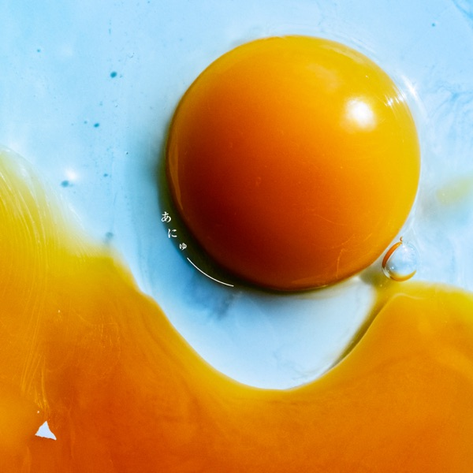
RADWIMPS
2025-10-08
出道 20 周年、剔原声后时隔 4 年首张纯专辑，Rock + 电影主题曲双线。
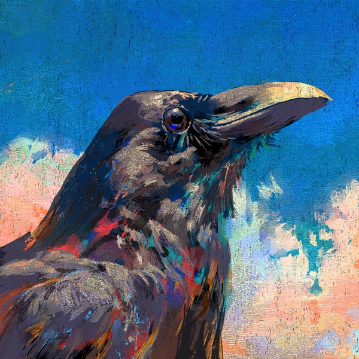
米津玄師
2026-06-15
2026 NHK 足球主题曲，节奏推进感强，适合跑步/通勤。
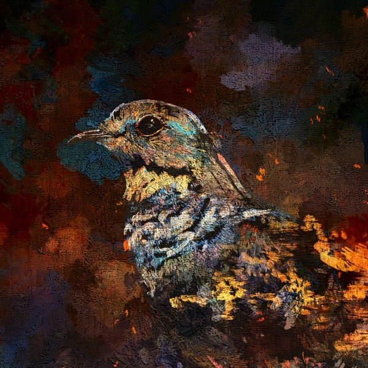
2026-07-13
电影《キングダム 魂の決戦》主题歌，夜里戴耳机听编曲层次。
藤井風
2025-09-05
“全球化”转折点，9 首全英文；编曲更 R&B 化，贴合你 R&B 那条线。
久石譲
2026-07-24
少见的纯古典创作专辑（非宫崎骏原声）。先听《Harp Concerto》，更短更有画面感。
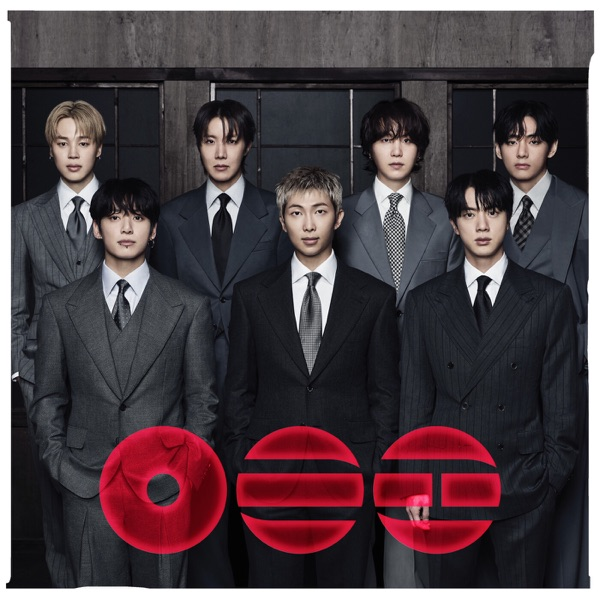
BTS
2026-03-20
军白期结束后全员回归。挑抒情/R&B 向曲目听，别被 K-pop 标签先入为主。
IU
2026-09-10
Ballad/Pop + 影视型歌手，正规 6 辑先行曲。偏轻电子的一首。
HUNTR/X / Saja Boys
动画电影原声，主打《Golden》全球爆红。“动画原声 + R&B”两条线并轨。